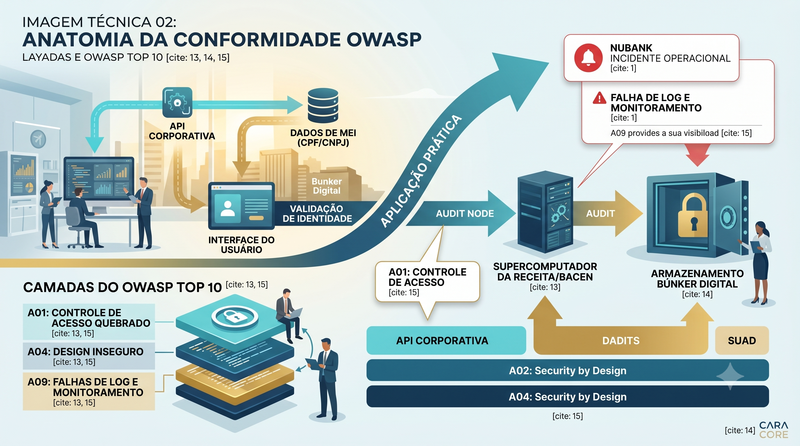

Os Erros Invisíveis na Arquitetura que Ninguém Te Conta
A Ilusão da Fachada: Um paralelo visual entre o design arquitetônico imponente e a vulnerabilidade estrutural oculta nos alicerces de um sistema digital.
Tempo de leitura: 7 minutos
Imagine que você decidiu investir no projeto dos seus sonhos: a construção de um condomínio residencial de altíssimo padrão. Para garantir o sucesso, você contrata engenheiros renomados, investe em uma fachada imponente, instala elevadores ultravelozes e cria uma área de lazer tecnológica de última geração. O empreendimento é um sucesso visual e funcional. Os moradores mudam-se maravilhados com a conveniência e a modernidade do lugar. Tudo funciona perfeitamente, até que o inesperado acontece.
Certo dia, descobre-se que um morador do bloco A conseguiu, usando a chave do próprio apartamento, abrir a porta de um vizinho no bloco B. Não houve arrombamento, o sistema de fechaduras digitais simplesmente se confundiu e permitiu o acesso. Dias depois, nota-se que a guarita principal foi projetada de tal forma que o vigia não consegue enxergar quem entra pelos fundos, e, para piorar, o livro de registros de visitantes sumiu, impossibilitando saber quem circulou por ali nas últimas semanas.
O condomínio continua lindo por fora, mas a sensação de segurança desmoronou. Perceba o padrão: o desastre não ocorreu porque os elevadores pararam ou porque a pintura descascou. O projeto falhou em seus alicerces invisíveis de proteção e protocolo.
A Ilusão da Funcionalidade
No mundo dos negócios e da tecnologia, esse fenômeno acontece diariamente. Empresas, startups e aplicativos investem milhões em plataformas com designs espetaculares, botões rápidos e transações em tempo real. No entanto, focar apenas naquilo que o cliente vê cria uma falsa sensação de invulnerabilidade. Quando uma falha operacional acontece em um sistema, a maioria das pessoas culpa o "computador", mas a verdade é que a estrutura já nasceu com rachaduras conceituais na sua engenharia.
A conformidade com as leis e a sobrevivência de qualquer plataforma digital dependem de regras de construção que a maioria dos usuários comuns e gestores de negócios ignora. E é aqui que desvendamos o segredo dos engenheiros.
O Manifesto Oculto da Engenharia Digital
Aquilo que no jargão da construção civil chamaríamos de "normas técnicas de segurança estrutural", no desenvolvimento de software e back-end atende pelo nome de OWASP Top 10.
A OWASP (Open Worldwide Application Security Project) é uma fundação global que mapeia as dez falhas de segurança mais críticas, repetidas e devastadoras que profissionais de tecnologia cometem ao criar sistemas no mundo inteiro. Quando destrinchamos a analogia do nosso condomínio, estamos olhando diretamente para esse documento de especificação de mercado:
1. A chave do vizinho → Broken Access Control (Controle de Acesso Quebrado)
É a falha número um do planeta (A01:2021). Ocorre quando o sistema identifica você corretamente (o morador é legítimo), mas esquece de validar se você tem permissão para acessar os dados de outra pessoa (abrir o apartamento do vizinho ou ver o saldo de outra conta). Em nível técnico, isso expõe falhas conhecidas como IDOR (Insecure Direct Object Reference), que é quando alguém consegue acessar dados alheios apenas mudando o número de identificação do usuário na barra de endereços do navegador.
2. A guarita com pontos cegos → Insecure Design (Design Inseguro)
É o erro A04:2021. Significa planejar a tecnologia do negócio sem pensar em segurança desde o primeiro rabisco do projeto. Tentar corrigir falhas graves de arquitetura apenas com códigos superficiais de "remendo" após o sistema já estar pronto é o equivalente a instalar alarmes extras quando o prédio foi construído em solo instável.
3. O livro de registros portuários desaparecido → Security Logging and Monitoring Failure (Falha de Registro e Monitoramento)
Mapeado como A09:2021. Se um sistema sofre uma tentativa de fraude ou invasão e os administradores não possuem registros (logs) organizados e seguros, a empresa fica completamente no escuro. Sem essa auditoria interna, é impossível descobrir a extensão do vazamento, quem realizou o acesso indevido e quando aconteceu.

Mapeamento de Riscos (OWASP): Representação simplificada de como o sistema deve verificar as permissões nas fronteiras da aplicação para impedir acessos indevidos e registrar atividades suspeitas.
Análise Prática: Protegendo os Bastidores da Aplicação
Para quem projeta e desenvolve sistemas, a prevenção real dessas vulnerabilidades exige práticas estruturais simples:
- Princípio do Menor Privilégio: Dar a cada usuário apenas o acesso estritamente necessário para realizar sua tarefa. Todo ponto de acesso da aplicação deve verificar ativamente se o usuário logado é de fato o proprietário da informação solicitada. Exemplo em código de segurança (Java Spring):
// Garante que o usuário logado só acesse os seus próprios dados @PreAuthorize("#userId == authentication.principal.id") - Design Seguro: Fazer modelagem de ameaças (desenhar o fluxo de dados prevendo onde um invasor tentaria fraudar o sistema) e utilizar uma arquitetura modular em camadas, garantindo que uma falha em uma parte não derrube ou comprometa todo o ecossistema.
- Registros de Auditoria (Logs): Gravar logs de eventos comerciais críticos em um local centralizado e seguro, assegurando que o histórico registre ações suspeitas sem expor dados sensíveis como senhas ou informações pessoais dos clientes.
A Responsabilidade por Trás das Telas
Compreender o OWASP Top 10 não é uma tarefa restrita aos especialistas em ataques cibernéticos. Trata-se de cultura de negócios e governança de dados. Em uma era onde as movimentações financeiras, o Pix e as cruzadas fiscais automatizadas (como a unificação de CPF e CNPJ mencionada no artigo de 14 de junho) estão integradas, construir sistemas sem seguir esse manifesto é o equivalente a erguer um arranha-céu na areia.
A engenharia de software madura e consciente entende que a verdadeira beleza de uma aplicação não está na interface que reluz na tela, mas na solidez invisível que garante que, mesmo sob forte tempestade, a estrutura permaneça inabalável.